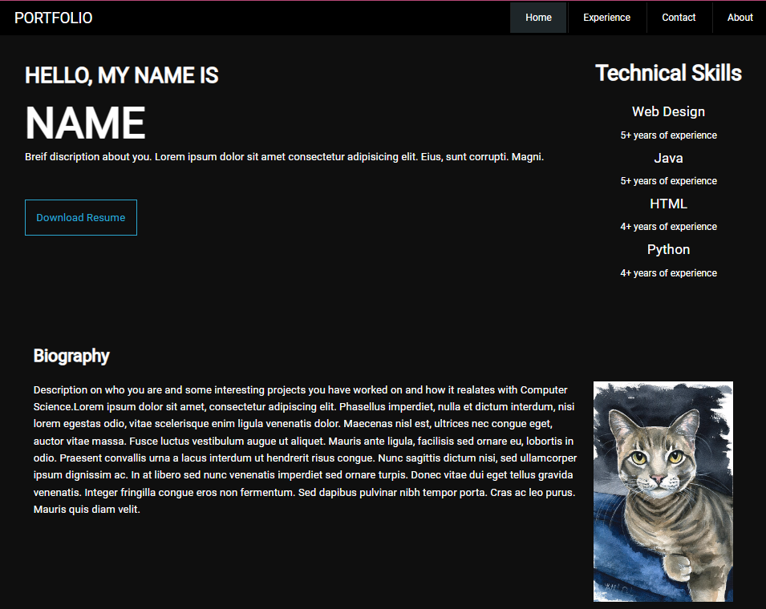
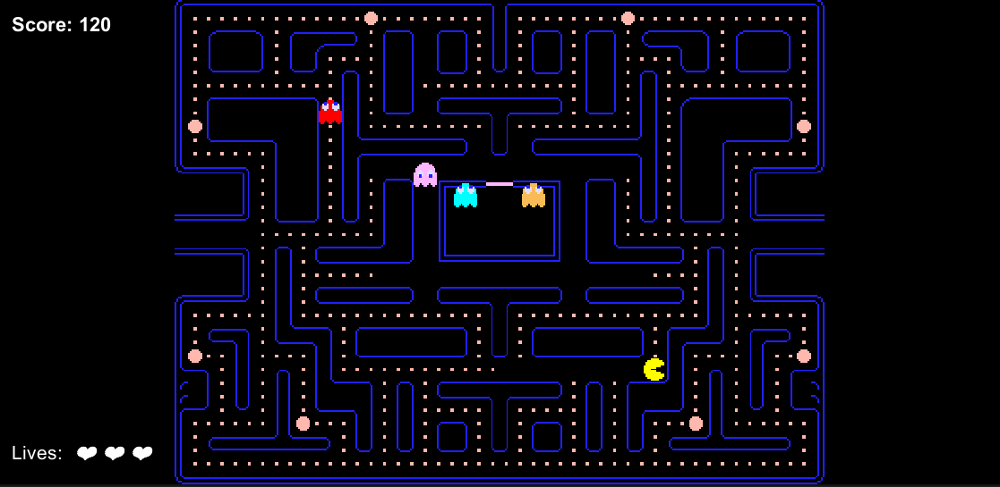
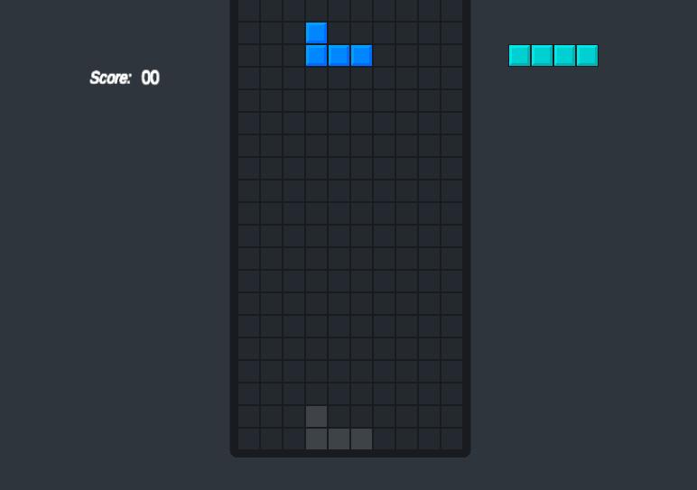
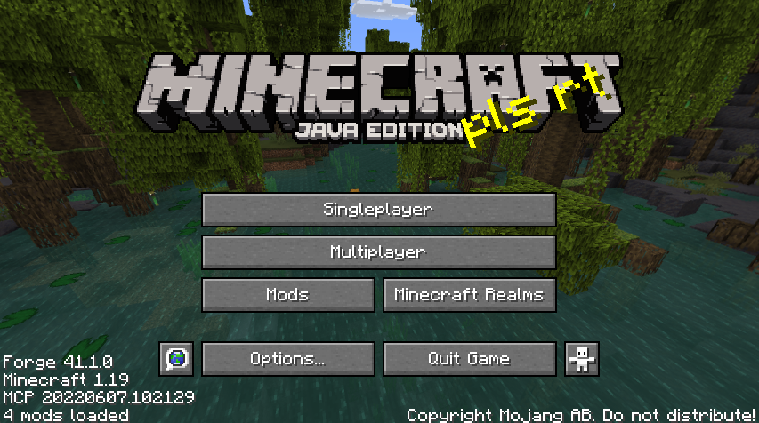
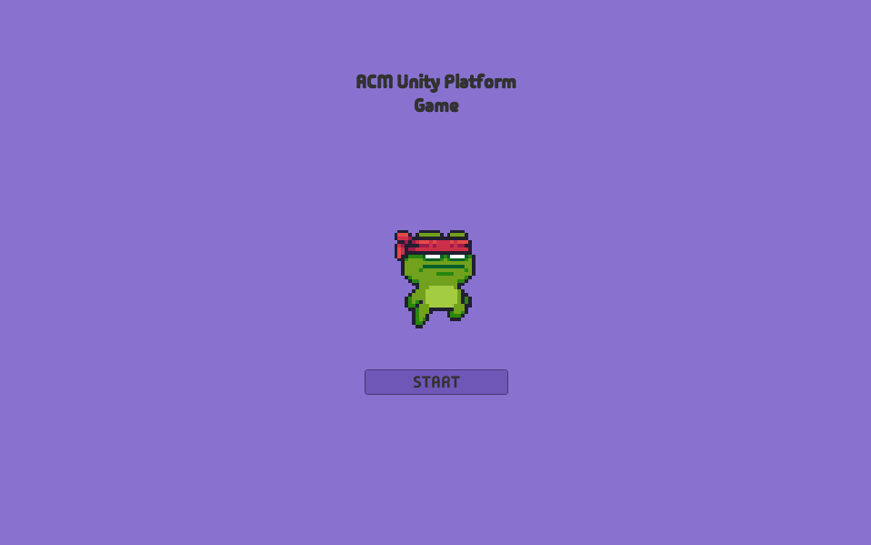

ACM Flappy Bird Project

MAY 2021
- Attend biweekly workshops to study design patterns and programming
concepts.
- Applied OOP and software design patterns of the pygame API
- Learned about machine learning and neural network AI systems.
- Utilized the NEAT algorithm to develop the AI Bird
- Experienced working with and developing AI
During this project, I used Visual Studio Code, Pygame, NEAT
Library, and Pickle Library. Using these tools, I recreated the
game Flappy Birds and added an AI element that utilized the NEAT
algorithm. It would generate birds that would get points for
passing the tubes successfully and living longer or losing points
for hitting a tube or dying early. A new generation would then be
generated with the traits of the previous best-performing birds,
eventually resulting in a perfect bird that plays the game
flawlessly.
ACM Portfolio Project

September 2021 - Current
- Attend biweekly workshops to study design patterns and programming
concepts.
- Utilized the HTML language and its components to
create a website/pages
- Learned about CSS and the interactions with HTML to
decorate a website
- Learned how to deploy a website using GitHub
In this project, I used HTML and CSS to create a website. Over the
course of the workshop, ACM went over basic HTML and CSS components
as we put together our portfolios. After making a basic
structure/outline for the portfolios, I could fill in the info and
customize the site to my preference. Lastly, I used GitHub to deploy
it to the internet.
ACM Pacman Project

November 2021
- Attend biweekly workshops to study design patterns and programming
concepts.
- Applied OOP principles to create the projects system
- Learned about working multiple files projects
- Learned about creating 2D games and game design
- Utilized Unity's tile map function to create the game's world and
visuals
This project was one of my first chances to experience a multi-file
and multi-team project. It was developed using C# and Unity as its
game engine. Using OOP principles, objects that pertained to Pacman
and the Ghosts that the players play against were created. I then
used these objects to determine their interactions and the game
loop. To make the world that the player sees, I used Unity's
tilemap system. In this system, one needs to place a piece at a
time to create an image, so I recreated a version of the Pacman
world using pre-textured pieces and drew it out in the engine.
Click to play the Demo
ACM Tetris Project

May 2022
- Attend biweekly workshops to study design patterns and programming
concepts.
- Create movement by using and manipulating vectors
- Utilized Unity's tile map function to procedurally create the
game's world and visuals
- Learned about creating 2D games and game design
During this project, ACM re-created Tetris using Unity and C#. Unity
tilemaps were also used in this project, but only for the foreground.
The background was an image, while the foreground was being drawn
procedurally. As the player's piece gradually falls or fills an
entire row to get points, the pieces on the board are redrawn and
updated. To have preset Tetrominoes as the game pieces, I used an
array of vectors that made up each Tetromino piece. Using these
arrays, I created the pieces of classic Tetris and can manipulate
its data to have it move along the board and rotate as the user
wants. Then, with some game logic to give points to the player for
filling up a row, I recreated Tetris.
Click to play the Demo
ACM Minecraft Mod Project

November 2020 & April 2023
- Attend biweekly workshops to study design patterns and programming
concepts.
- Learned various aspects of the game function with an introduction
to basic game design
- Learned about class inheritance and software design patterns of
the Forge API
- Designed Textures and Animated a Single Model
- Learning to utilize game development API for game modding.
- Experiencing working with a fully fledged IDE.
For this project, I attended two different sessions of the Minecraft
mod. In the first one, I learned about the various aspects that make
Minecraft work. Using the Minecraft and Minecraft forge API, I learned
about existing classes. Then, through inheritance, I created subclasses
that enabled me to develop custom armor and tools. In the second
session, ACM showed everything from the first session I attended and
as well as creating custom ore and blocks. Additionally, I learned
about generating the customs ore into the three Minecraft realms, like
finding stone in the Overworld, netherrack in the Nether, or endstone
in the End. I also learned how to create custom food with the option
to give the players unique properties when consumed, like additional
haste or higher jumping power for a short duration. Finally, I
animated and created a monster mob model. This one was hostile like
the other entities players can spawn into the world with an egg. It
can wander around, avoid water, and attack the player, villager, or
creeper when they get close.
ACM 2D Platformer

November 2023
- Attend biweekly workshops to study design patterns and programming
concepts.
- Created Animations using Unity's Animation system
- Utilized Unity's scene management and multiple scenes to create levels for the game
- Created movement using Unity's movement system and adding physics using Unity's Rigidbody component
During this project, I used C# and Unity to create a 2D platformer. For
this project, the goal was to create a platformer with traps and levels.
Using Unity's scene management, I made different scenes that
represented each of the layers in the game. To create the layers, I
used Unity's tilemap system and drew out the layers for each scene. I
utilized Unity's new movement system and the rigid body component to
create movement this time. The most significant difference is that
before, I would have to manipulate vectors to create movement, but
with the rigid body, I would need to apply a force in the direction I
want the player to go. Then, the level was completed after adding some
logic to create the game loop.
Click to play the Demo